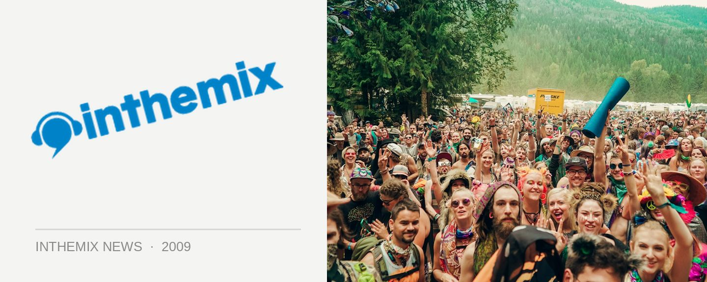

Set times for the final ever Transmission!
The Transmission parties have been responsible for setting the benchmark for big events in Sydney over the past 14 years, providing some of the most spectacular production, innovative approaches to technology and blinding DJ performances from some of the best talent in trance and hard dance, from both Australia and abroad. But this weekend DJ Nervous will be stepping up the decks one last time, wrapping up an era with a party that’ll hopefully live up to Transmission’s epic legacy.
Transmission will return to its home for the last seven years of the State Sports Centre, with a massive five arenas of DJs to choose from. Whether it’s the inevitable set of anthems from the locals that you’re getting excited about, or the highly anticipated visit from international hardstyle guns Project One, there’s enough to please transmission fans both old and new. See you there!
Transmission waves its final farewell at the State Sports Centre this Saturday 30th May. Check out set times below…
Main Arena
9pm:-10pm: DJ Comp Winner
10pm:-11pm: Yoshi vs Matrix
11pm:-12am: Am:ber vs Nik Fish
12am:-1am: Pee wee vs John Ferris
1am:-2am: BeXta vs Archie
2am:-3am: Nervous
3am:-4am: Project One
4am:-5am: Headhunterz
5am:-6am: Wildstylez
6am:-7am: Suae vs Pulsar
Rave Arena
9pm:-10pm: Selby
10pm:-11pm: Mully
11pm:-12am: Spellbound
12am:-1am: Aladdin
1am:-2am: Paul Holden
2am:-3am: Shade
3am:-4am: Tom e
4am:-5am: Chester
5am:-6am: Akira
6am:-7am: Conan
House Arena
9am:-10pm: QPID
10pm:-11pm: A.L.C
11pm:-12am: Young Jase
12am:-1am: Adam: Phillis
1am:-2am: Fowl Play Dj
2am:-3am: Matt Roberts
3am:-4am: Pato De Gomah
4am:-5am: Azza United
5am:-6am: Nemesis
Transmission Power Arena
9pm:-10pm: Arbee vs Yennus
10pm:-11pm: Sam: Spade vs Deeplex
11pm:-12am: Nathan Cryptic vs Rossco
12am:-1am: Imperial vs Shadower
1am:-2am: Luke Spellbound vs Audio Dam:age
2am:-3am: Bioweapon
3am:-4am: Hardforze vs Xdream:
4am:-5am: Spinout vs Scotty G
5am:-6am: DJ Comp Finalist
6am:-7am: DJ Comp Finalist
Close
Transmission Energy Arena
9pm:-10pm: DJ Comp Finalist
10pm:-11pm: DJ Comp Finalist
11pm:-12am: Arbor vs Cantosis
12am:-1am: Nitrouz vs Toxic
1am:-2am: S Dee vs The Anarchist
2am:-3am: Tempa vs Nomad
3am:-4am: Dexi vs Scott Becker
4am:-5am: DJ Comp Finalist
5am:-6am: DJ Comp Finalist
6am:-7am: DJ Comp Finalist